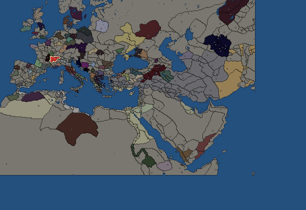
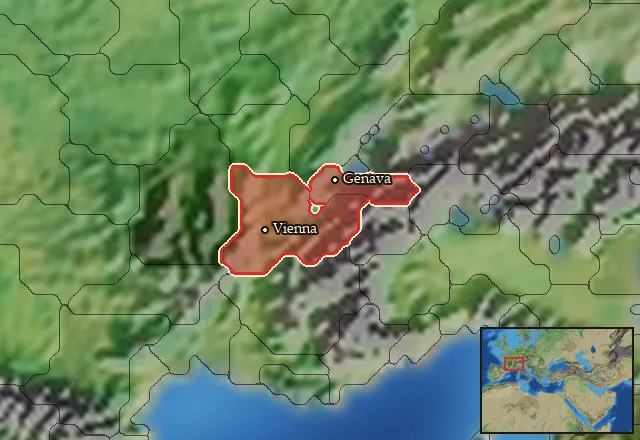

RTR: Imperium Surrectum
RTR: Imperium SurrectumAllobroges


- difficulty Difficult
- Gallic culture
- believes
 Celtic
Celtic - 2 settlements
- capital Vienna
- 9,550 manpower
- 2 characters
- 19 faction units
- 431 regional units
The campaign brief
"Nearby are the Allobroges, a people who yield in power and fame to no other nation in Gaul." – Livy, Ad Urbe Condita, 21.23
Suavelos my friend ! You are joining our people, let me introduce you to our country. The heart of our homeland is Rhodanos, the great river that heaps its blessings upon us. To the east, the Alps raise their snowy peaks to the sky. There, the countryside is jagged with rocky peaks, from which the winds blow in storms. The Rhodanos rushes through an opening of its own making, ploughing the land with untamed strength. On it, we trade and travel. It connects the far side of the Alps with the Mediterranean, the Celtic world with the Greek and Phoenician oikoumene. We live at the crossroads of these great trade routes, controlling exports of gold, salt, furs, meat, slaves, and wood. The other Celts around the Liger, the Elavris and the Souconna all have to pass through our lands to receive the much-coveted wine from the Greeks. The Arverni are so fond of it that they shower us with gifts and make us, sigh!, ‘enjoy’ the presence of their ambassadors almost every month! To protect and control the access to the Rhodanos, we built a great fortress on a hill near its banks. Our oppidum is Vienna, located a little south of the confluence of the Rhodanos and the Souconna. It also guards the entrance to our western territories, where one finds great lakes and the gates of the Alps. This territory is called Sapaudia, for its large fir forests that surround the mountains and block the passage between the mountain we call Seleucos and the Alps. At the heart of this region is Genava. This city serves as a commercial and diplomatic crossroads with the peoples on the other side of Lemanus.
Our people came to this land only a few generations ago. We do not bury our dead in the same way as our neighbours. We have retained the ancient practice of our ancestors of cremating our dead, except for the most influential among them: we place their personal belongings and ashes in a grave during a public ceremony. Indeed, this practice of cremation comes to us from our distant ancestors, those who crossed the Hercynian forest. The Druids tell us that they were attracted by the demand of the Greeks for mercenaries, because they did not have the courage to defend their territory themselves. Don’t we all know that these Hellenes are coast-huggers, never daring to leave the shadow of their very own walls! But what they lack in courage, they compensate with gold and other goods to distribute. After a few campaigns against the Ligurians in the mountains, our people were allowed to settle in their present valleys. We still hire out our arms or those of our subjects from time to time, but for now, trade is more important to our people than war.
At least on our side, that is, for it seems that other Celts are harassing the Greeks far away across the Illyrian lands. I came across a certain Bolgios who was strutting around with the head of one of the kings of the Greeks, I can't tell you the look on the faces of these wimpy merchants living nearby! Anyway, here we are, at the head of one of the most important commercial crossroads, and this position is much-coveted. Indeed, the Aedui and Sequani hate us because we have replaced their supremacy in trade with the Greeks. They have recently allied themselves, scheming and plotting and devising a cunning economic alliance, using the same common currency to pay the merchants. For the moment, their contempt is not expressed by the sword, but this situation could change... Are you ready to take up your sword with us, brave Allobroges, masters of the great Rhodanos?
Starting settlements
Allobroges begins with 2 settlements and 9,550 manpower.
| Settlement | Region | Size | Manpower | Already built | Settlement | Region | Size | Manpower | Already built |
|---|---|---|---|---|---|---|---|---|---|
| Vienna (capital) | Allobrogia | large town | 5,750 | 10 buildings | Genava | Lemannus Inferior | town | 3,800 | 3 buildings |
What is already built in each settlement
Vienna, in Allobrogia: Governor's Villa, Wooden Palisade, Homeland, Region Information Scroll, Roads, Local Barter, Grape Orchards (Rural), Basin Irrigation (Crops), Basic Armoury, Cisterns (Sanitation)
Genava, in Lemannus Inferior: Governor's House, Homeland, Region Information Scroll
Starting diplomacy
Allobroges begins the campaign with no allies, no trade agreements and no wars.
Like every faction, it is also at war with the  Free Peoples, who hold every settlement no faction does.
Free Peoples, who hold every settlement no faction does.
Reforms
Open to every faction: Military innovations have arrived!, Second wave of military innovations have arrived!.
Units you can recruit
The same as in the main campaign.
Homeland
Allobroges's homeland is 2 regions. Only there can it install the Homeland government (more on homelands).

Starting characters
| Name | Role | Age | Name | Role | Age | ||||||
|---|---|---|---|---|---|---|---|---|---|---|---|
| Indutiomarus | General | 37 | Seginus | General | 25 |